Sistemas
complementares
Chave de fenda 90° e conjunto transbucal. Acesso onde a mão não chega.
Chave de fenda 90°
Um instrumento para furar e inserir parafusos na mandíbula posterior.
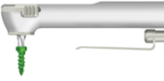
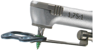
Características e benefícios
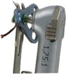
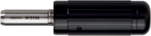
Perfil menor, mais liberdade de movimento
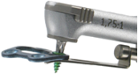
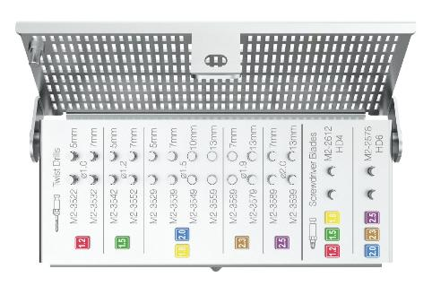
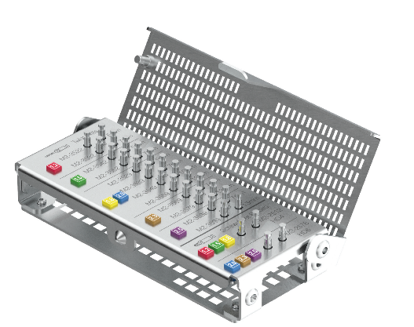
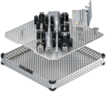
Compatibilidade e principais usos
Usada principalmente em combinação com os sistemas MODUS 2 Mandíbula e MODUS 2 Ortognático. Compatível com os seguintes tamanhos de parafuso:
Acesso transoral para osteossíntese no ângulo da mandíbula, ramo ascendente e côndilo — e para remoção transoral de parafusos.
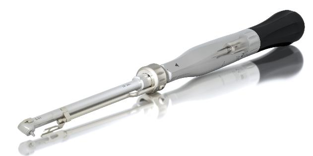
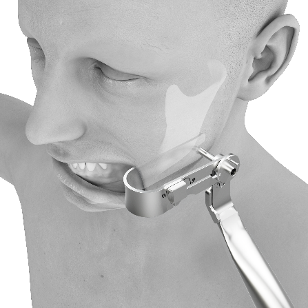
Resumo de referências
Códigos citados nesta apresentação, por indicação.
M2-4660 · M2-4662 · M2-4664
M2-4692 · M2-4852 · M2-4854
M2-4882 · M2-4884 · M2-4886
M2-4894 · M2-4300 · M2-4384
M2-4621 · M2-4637 · M2-4638
M2-4651 · M2-4652 · M2-4829
M2-4843 · M2-4847 · M2-4848
M2-4856 · M2-4324
M2-4050 · M2-4051 · M2-4052
M2-4053 · M2-4054 · M2-4055
M2-4056 · M2-4057 · M2-4058
M2-4061 · M2-4062 · M2-4063
M2-4064 · M2-4065 · M2-4066
Lista de referência para treinamento. Confirme disponibilidade e registro por país antes de qualquer proposta comercial.
MODUS 2
em uma frase
Um conceito de cores. Três indicações. Tecnologias que os cirurgiões já conhecem.
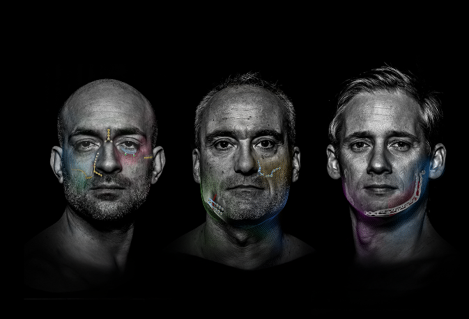

Enjoy life.